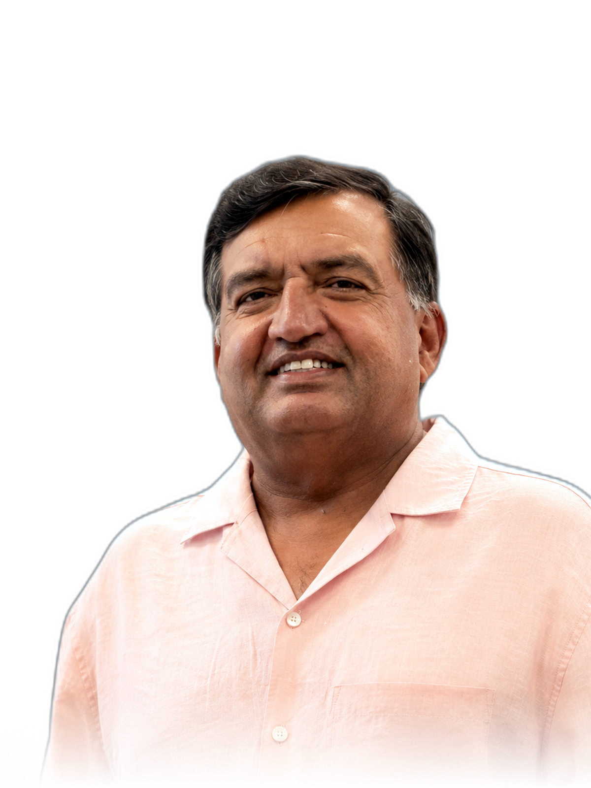

National City / PNC
Business banking for small-business customers, with responsibility for relationships, deposits, loans, and referrals.
Strategic Member · Aura Platform LLC
Banking, business relationships, and the discipline of regulated operations.
Amjad brings a long-running Michigan banking practice to his participation in Aura Platform: experience with business customers, commercial decisions, credit, portfolios, and the teams responsible for serving people well.

Small-business customers and the relationships around them.
Credit, portfolio management, and understanding business risk.
Teams, customer relationships, and operating discipline.
A Strategic Member grounded in institutional reality.
Banking / business relationships
Amjad’s experience has moved through business banking, commercial lending, portfolio management, and branch leadership. That work asks for more than a product answer: it asks someone to understand how a business operates, what its decisions mean, and where risk or opportunity is emerging.
At National City / PNC and Parklane, he worked close to commercial customers and credit decisions. At University Bank, he worked across business and commercial loan programs. At Huntington, KeyBank, and now Citizens, the center of gravity has included branch teams, customer relationships, operating discipline, and the standards that regulated banking requires.
Selective professional arc
The chronology matters here only because it explains the breadth of the perspective.
Business banking for small-business customers, with responsibility for relationships, deposits, loans, and referrals.
Portfolio management and lending across commercial customers, credit recommendations, working capital, and business finance.
Senior branch and team leadership at Huntington, KeyBank, and current banking work with Citizens.
Relationship to Aura
As a Strategic Member of Aura Platform LLC, Amjad contributes the perspective of someone who has spent years close to businesses, financial judgment, customer relationships, and regulated operations.
Why this relationship matters
Aura is building public systems for communication, execution, and authored work. Amjad’s experience gives that work a direct connection to the operating realities of institutions and the businesses that depend on them.
A reason to speak
A conversation may be useful for people thinking about business relationships, institutional communication, commercial context, or regulated service.
Let’s connect ↗